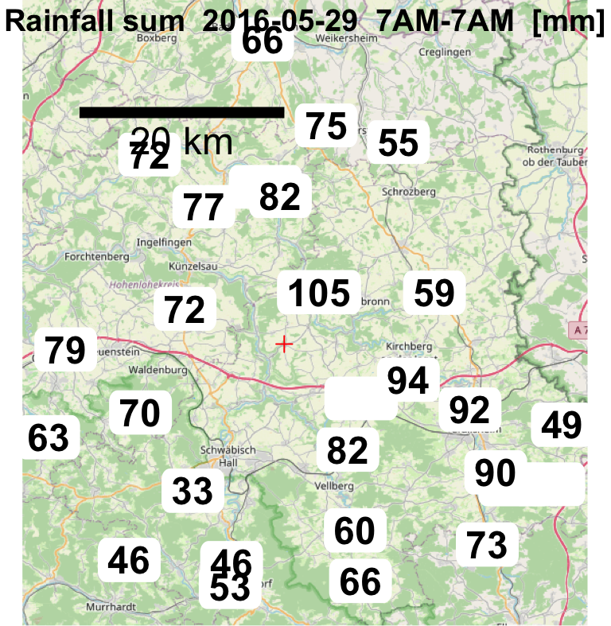

21 - use case: plot all rainfall values around a given point
21.1 Find meteo stations around a given point
rdwd::updateRdwd()
library(rdwd)
m <- nearbyStations(49.211784, 9.812475, radius=30,
res=c("daily","hourly"), var=c("precipitation","more_precip","kl"),
mindate=as.Date("2016-05-30"), statname="Braunsbach catchment center")
# Remove duplicates. if kl and more_precip are both available, keep only more_precip:
library("berryFunctions")
m <- sortDF(m, "var")
m <- m[!duplicated(paste0(m$Stations_id, m$res)),]
m <- sortDF(m, "res")
m <- sortDF(m, "dist", decreasing=FALSE)
rownames(m) <- NULL
DT::datatable(m, options=list(pageLength=5, scrollX=TRUE))Interactive map of just the meteo station locations:
21.2 Download and process data
Download and process data for the stations, get the rainfall sums of a particular day (Braunsbach flood May 2016):
prec <- dataDWD(m$url, fread=TRUE)
names(prec) <- m$Stations_id[-1]
prec29 <- sapply(prec[m$res[-1]=="daily"], function(x)
{
if(nrow(x)==0) return(NA)
col <- "RS"
if(!col %in% colnames(x)) col <- "R1"
if(!col %in% colnames(x)) col <- "RSK"
sel <- x$MESS_DATUM==as.Date("2016-05-29")
if(!any(sel)) return(NA)
x[sel, col]
})
prec29 <- data.frame(Stations_id=names(prec29), precsum=unname(prec29))
prec29 <- merge(prec29, m[m$res=="daily",c(1,4:7,14)], sort=FALSE)
head(prec29[,-7]) # don't show url column with long urls| Stations_id | precsum | Stationshoehe | geoBreite | geoLaenge | Stationsname |
|---|---|---|---|---|---|
| 2848 | 105 | 458 | 49.3 | 9.86 | Langenburg-Atzenrod |
| 5988 | 415 | 49.2 | 9.92 | Ilshofen | |
| 2787 | 72 | 355 | 49.2 | 9.68 | Kupferzell-Rechbach |
| 5206 | 82.2 | 396 | 49.1 | 9.9 | Vellberg-Kleinaltdorf |
| 2575 | 94 | 432 | 49.2 | 9.98 | Kirchberg/Jagst-Herboldshausen |
| 3416 | 82.5 | 294 | 49.3 | 9.81 | Mulfingen/Jagst |
7 of the files contain no rows. readDWD warns about this (but the warnings are suppressed in this website).
One example is daily/more_precip/historical/tageswerte_RR_07495_20070114_20181231_hist.zip
21.3 Plot rainfall sum on map
For a quick look without a map, this works:
plot(geoBreite~geoLaenge, data=m, asp=1)
textField(prec29$geoLaenge, prec29$geoBreite, prec29$precsum, col=2)But it’s nicer to have an actual map via OSMscale:
library(OSMscale)
map <- pointsMap(geoBreite,geoLaenge, data=m, type="osm", plot=FALSE)
pp <- projectPoints("geoBreite", "geoLaenge", data=prec29, to=map$tiles[[1]]$projection)
prec29 <- cbind(prec29,pp) ; rm(pp)
pointsMap(geoBreite,geoLaenge, data=m, map=map, scale=FALSE)
textField(prec29$x, prec29$y, round(prec29$precsum), font=2, cex=1.5)
scaleBar(map, cex=1.5, type="line", y=0.82)
title(main="Rainfall sum 2016-05-29 7AM-7AM [mm]", line=-1)